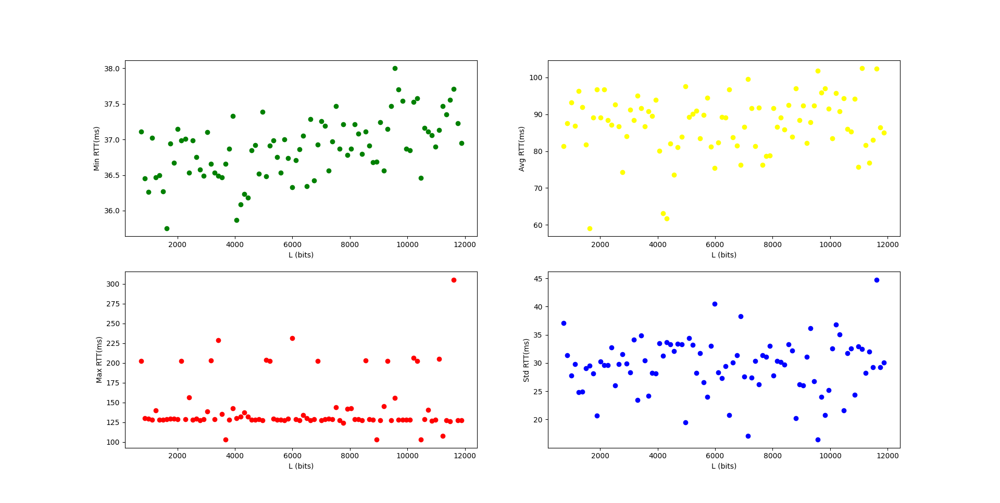

The project contains two main folders:
This project is written in python because this language provides useful modules such as matplotlib, numpy and pingparsing. These modules are used to manage charts, arrays and to parse the output of the ping command. NetPerf is compatible with both Linux and Windows operating system.
Having GNU Make for building projects will simplify the execution of the program. Otherwise it is possible to run the program manually.
This project requires some modules as previously stated. First of all pip module installer for python needs to be installed and added to the PATH. On linux if you have python already install type sudo apt install python3-pip.
For windows psping is required.
$ make install
$ make exe
# or
$ make all
$ python3 -m pip install pingparsing
$ python3 -m pip install matplotlib
$ python3 -m pip install numpy
$ mkdir output
$ python3 -B ./src/netperf.py
Once the program is running, it will ask to insert the hostname of which the ping command is going to run (notice that you can skip this input by simply pressing Enter and the default hostname will be "lon.speedtest.clouvider.net") and if you are in linux it will ask also to decide whether the user wants to run the commands in sudo mode. In windows it is better practise to open the terminal in administrator mode in order to solve authorization problems. Then the program will run some ping commands in sequence and the traceroute command (tracert for windows) to find the correct amount of links crossed. Another ping command is prompted in order to save the output. At the end the program will loop other ping commands with increasing payload of packets each iteration up to 1472 bytes and steps of 16 bytes (number of packets sent is 20 each time). The last part of the program could take more than 10 minutes because the ping command is a time consuming process expecially if used for 90 iterations. In windows psping remove this time issue.
Considering:
Finding total hops -->
Default ping to save output to .txt -->
Ping loop to get the network stats -->
LINUX
$ make exe
$ if [ ! -d "./output" ]; then mkdir output; fi
$ python3 -B ./src/netperf.py
$ Insert hostname, skip by pressing enter. The default hostname is
$ 'lon.speedtest.clouvider.net'
$ --> lon.speedtest.clouvider.net
$ IP: 5.180.211.133
$ Sudo (Y/N) Y // this input is present only in linux
$-------------Finding amount of hops to the host-------------
$ Running command: sudo ping -c 1 -t 30 -s 1 5.180.211.133
$ [sudo] password for dave:
$ Running command: sudo ping -c 1 -t 29 -s 1 5.180.211.133
$ Running command: sudo ping -c 1 -t 28 -s 1 5.180.211.133
$ Running command: sudo ping -c 1 -t 27 -s 1 5.180.211.133
$ Running command: sudo ping -c 1 -t 26 -s 1 5.180.211.133
$ Running command: sudo ping -c 1 -t 25 -s 1 5.180.211.133
$ Running command: sudo ping -c 1 -t 24 -s 1 5.180.211.133
$ Running command: sudo ping -c 1 -t 23 -s 1 5.180.211.133
$ Running command: sudo ping -c 1 -t 22 -s 1 5.180.211.133
$ Running command: sudo ping -c 1 -t 21 -s 1 5.180.211.133
$ Running command: sudo ping -c 1 -t 20 -s 1 5.180.211.133
$ Running command: sudo ping -c 1 -t 19 -s 1 5.180.211.133
$ ------------------------------------------------------------
$ Running command: sudo ping -c 10 -t 64 -s 64 5.180.211.133
$ PING 5.180.211.133 (5.180.211.133) 64(92) bytes of data.
$ 72 bytes from 5.180.211.133: icmp_seq=1 ttl=54 time=89.9 ms
$ 72 bytes from 5.180.211.133: icmp_seq=2 ttl=54 time=112 ms
$ 72 bytes from 5.180.211.133: icmp_seq=3 ttl=54 time=36.7 ms
$ 72 bytes from 5.180.211.133: icmp_seq=4 ttl=54 time=53.2 ms
$ 72 bytes from 5.180.211.133: icmp_seq=5 ttl=54 time=73.9 ms
$ 72 bytes from 5.180.211.133: icmp_seq=6 ttl=54 time=55.4 ms
$ 72 bytes from 5.180.211.133: icmp_seq=7 ttl=54 time=118 ms
$ 72 bytes from 5.180.211.133: icmp_seq=8 ttl=54 time=100 ms
$ 72 bytes from 5.180.211.133: icmp_seq=9 ttl=54 time=60.4 ms
$ 72 bytes from 5.180.211.133: icmp_seq=10 ttl=54 time=81.7 ms
$
$ --- 5.180.211.133 ping statistics ---
$ 10 packets transmitted, 10 received, 0% packet loss, time 9019ms
$ rtt min/avg/max/mdev = 36.665/78.131/118.235/25.639 ms
$ ------------------------------------
$ Running command: traceroute 5.180.211.133
$ traceroute to 5.180.211.133 (5.180.211.133), 30 hops max, 60 byte packets
$ 1 myfastgate.lan (192.168.1.254) 4.492 ms 4.456 ms 4.445 ms
$ 2 10.5.3.124 (10.5.3.124) 28.441 ms 16.458 ms 28.402 ms
$ 3 10.5.105.106 (10.5.105.106) 12.125 ms 12.372 ms 16.415 ms
$ 4 10.250.137.205 (10.250.137.205) 16.405 ms 10.250.137.201 (10.250.137.201) 16.394 ms 16.384 ms
$ 5 10.254.20.41 (10.254.20.41) 23.915 ms 23.905 ms 10.254.20.45 (10.254.20.45) 37.013 ms
$ 6 93-63-100-105.ip27.fastwebnet.it (93.63.100.105) 23.884 ms 93-63-100-113.ip27.fastwebnet.it (93.63.100.113) 15.351 ms 93-63-100-61.ip27.fastwebnet.it (93.63.100.61) 15.315 ms
$ 7 93-63-100-141.ip27.fastwebnet.it (93.63.100.141) 15.298 ms 20.303 ms 93-63-100-145.ip27.fastwebnet.it (93.63.100.145) 15.481 ms
$ 8 i63lgv-005-ae5.bb.ip-plus.net (193.5.122.134) 16.955 ms 16.939 ms 20.570 ms
$ 9 i71lzw-015-ae4.bb.ip-plus.net (138.187.129.162) 20.561 ms 20.550 ms 17.244 ms
$ 10 i79zhh-005-ae21.bb.ip-plus.net (138.187.129.75) 17.214 ms 17.203 ms 40.430 ms
$ 11 i79tix-025-ae10.bb.ip-plus.net (138.187.129.174) 40.399 ms 40.382 ms 40.342 ms
$ 12 100ge0-35.core2.zrh3.he.net (72.52.92.130) 40.323 ms 102.601 ms 102.558 ms
$ 13 100ge0-35.core2.gva1.he.net (184.104.193.134) 102.537 ms 102.512 ms *
$ 14 * * *
$ 15 linx-lon1.thn2.peering.clouvider.net (195.66.227.14) 101.388 ms 101.343 ms 101.322 ms
$ 16 * * *
$ 17 h185-42-222-17.reverse.clouvider.net (185.42.222.17) 102.647 ms 102.628 ms *
$ 18 185.245.80.45 (185.245.80.45) 102.521 ms 102.503 ms 102.485 ms
$ 19 185.245.80.1 (185.245.80.1) 98.261 ms 63.026 ms 62.979 ms
$ 20 5.180.211.133 (5.180.211.133) 62.960 ms 62.941 ms 194.35.234.205 (194.35.234.205) 62.917 ms
$ ------------------------------------
$ Route is correct
$ Hops to host: 20
$ Number of links crossed: 40
$ ++++++++++++++++++++++++++++++++++++++++++++
$ Running netperf with packets of size 512 bits
$ Running command: sudo ping -c 20 -t 64 -s 64 5.180.211.133
// ... iteration of the ping command to get the network stats
In the previous example the number of links crossed is 32, and it is verified by the traceroute or tracert command. The RTT data collected from the last part of the program is displayable in these graphs:
Linux:
Windows: 
From min-RTT graph we can use the numpy.polyfit method to get the slope of the function. We can call this coefficient 'a' (notice that 'a' has to be converted from ms/bit to s/bit). This slope is used to estimate the value of the throughput and the throughput bottleneck with the following formulas:
In this specific example the value of the throughputs are:
Linux:
Windows:
With numpy.polyfit we can also calculate the time of propagation T of the signal through the links.
Linux:
Windows:
We can see that the throughput is in the order of magnitude of tens of Mbit/s in optimal conditions, meaning that all the links in the connection have the same throughput and the packets queue time in each link is approximately 0s. If there is a single link which has the lowest throughput among all of the links crossed, it works as a bottleneck limiting the thoughput (notice that this link as to be considered two times because the packets need to return through the same route).
The time of propagation does not depend from the network speed but from the actual speed of the propagation of the signal, so it is governed by physics laws that prevents the signal from being faster than speed of light. If we ping to an host located in America the minimum time of propagation is around 120 ms, otherwise if we ping to an host located in Europe the T can be close to 30 ms. Notice that this time depends on the type of connection, wired connection performs better.